RecalBoxDMD
Un cadre lumineux autonome qui anime votre intérieur — des centaines de GIFs rétro en rotation, une horloge qui change d'habillage. Connectez-le en WiFi à n'importe quelle Recalbox et il devient aussi son marquee numérique.
🎬 Playlist de GIF
Des centaines d'animations rétro, en boucle
Le pack fourni compte environ 600 GIFs pixel-art — arcade, consoles, ordinateurs, cinéma, anniversaires, Halloween, Noël... de quoi faire vivre le panneau sans jamais rien y brancher d'autre.
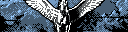
Pack offert par eLLuiGi / RpiTeam — leur collection complète (~11 000 GIFs) est en vente sur rpiteam.carrd.co.
Composez votre propre rotation
Depuis votre téléphone, ou depuis une application PC dédiée pour les gros dossiers, choisissez quels GIFs tournent, dans quel ordre, et à quelle vitesse — votre propre programmation, sans rien recâbler.
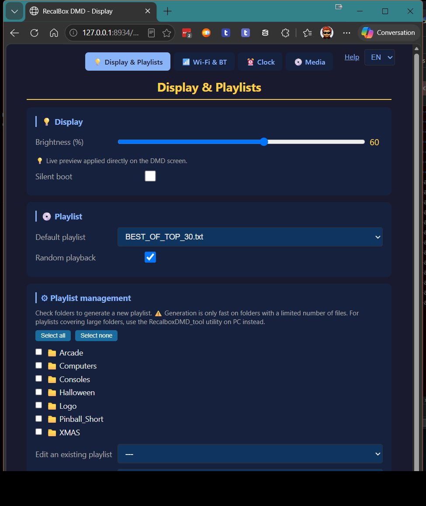
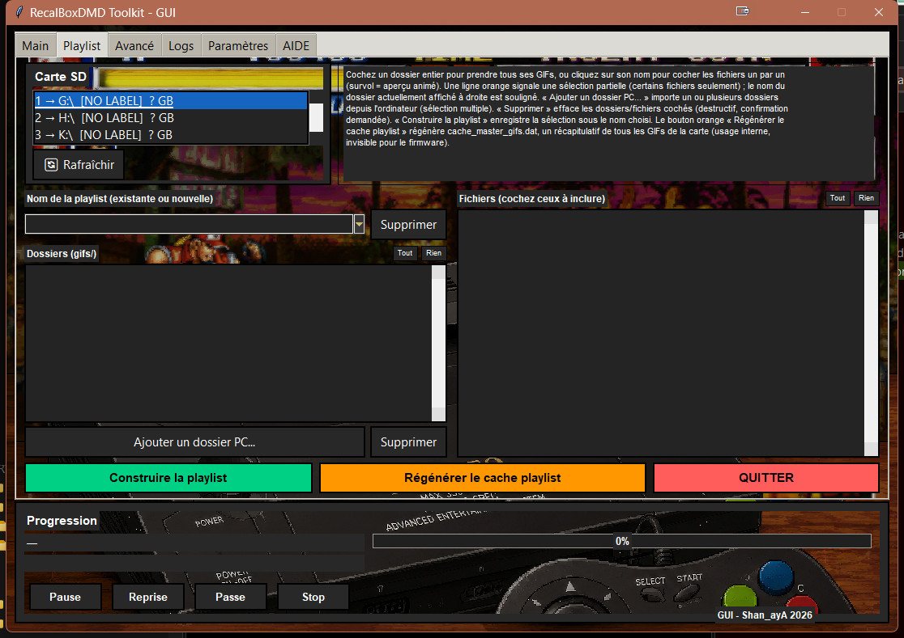
Un nouveau GIF ? Il tourne à l'instant
Glissez une image depuis votre navigateur, téléphone ou ordinateur — elle rejoint la rotation immédiatement, sans reformater de carte, sans rallumer l'appareil.
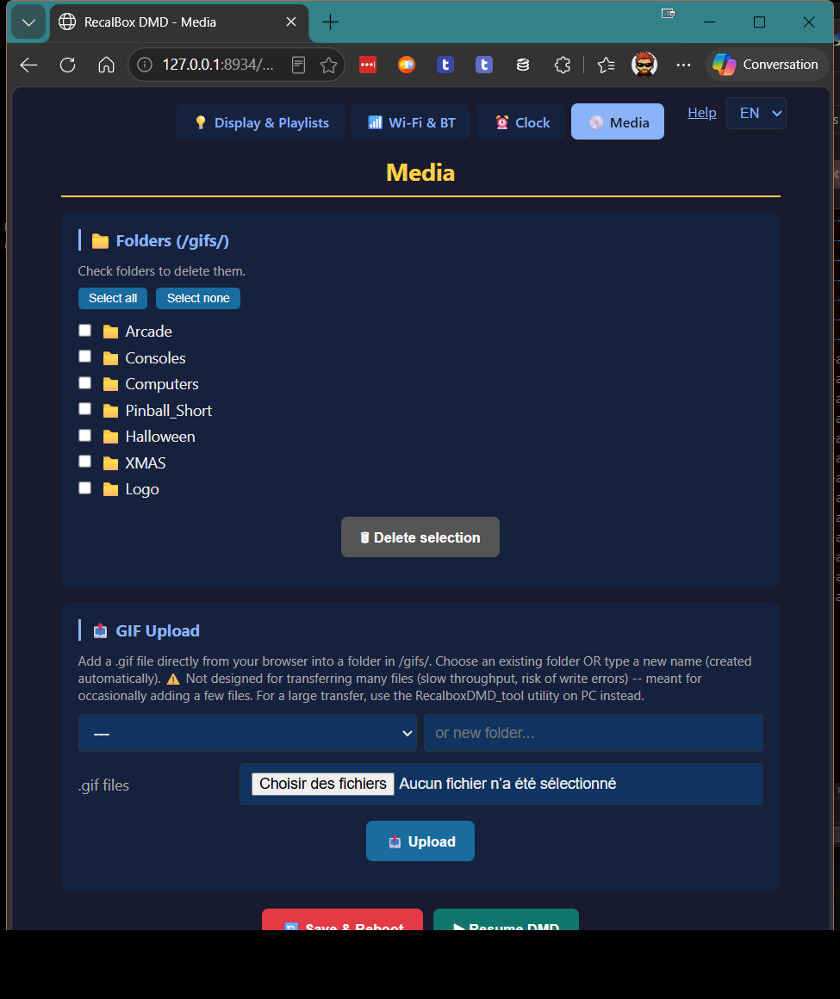
Une horloge qui change de décor
Entre deux animations — ou en continu, si vous préférez — le panneau devient une horloge pixel-art. Dix scènes faites main, choisies en un instant depuis votre téléphone, avec un aperçu en direct poussé sur le panneau pendant que vous décidez.
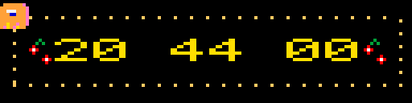
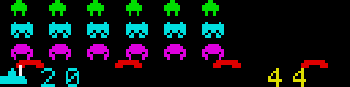
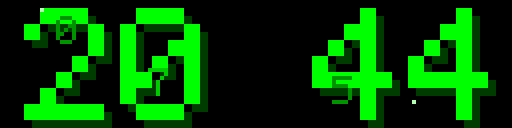
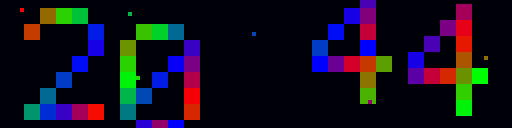
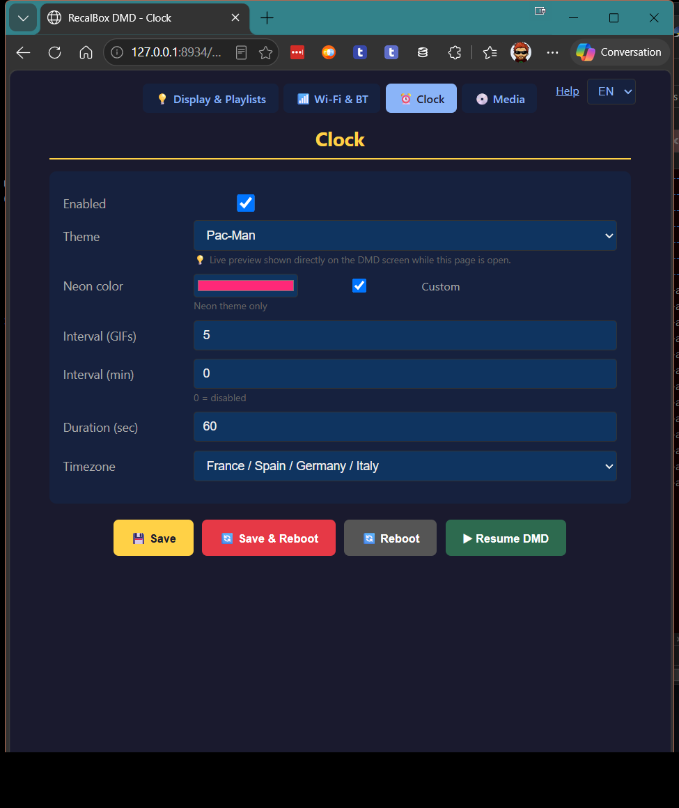
Choix du thème, couleur, intervalle et durée — en direct depuis le téléphone
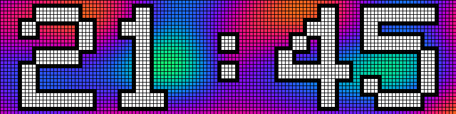
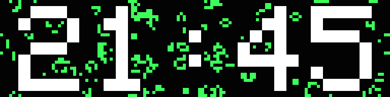
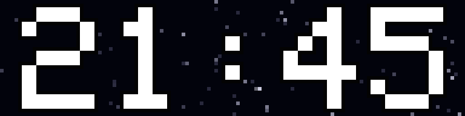
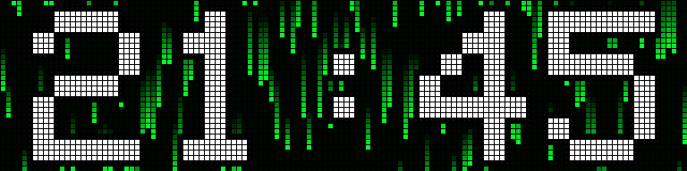
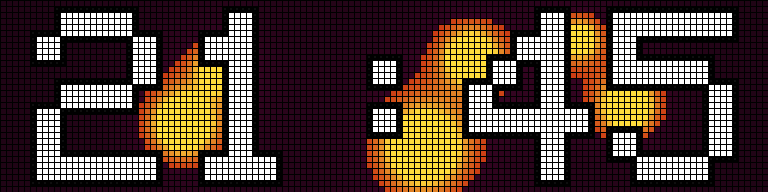
🧩 Widgets & écrans vivants
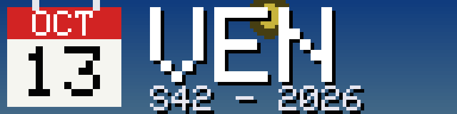

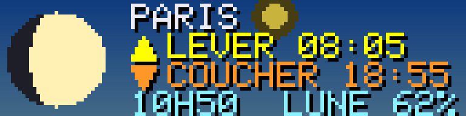
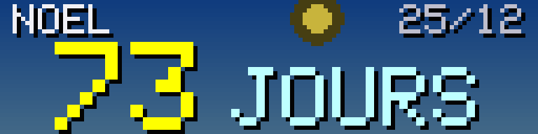
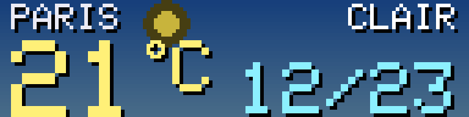
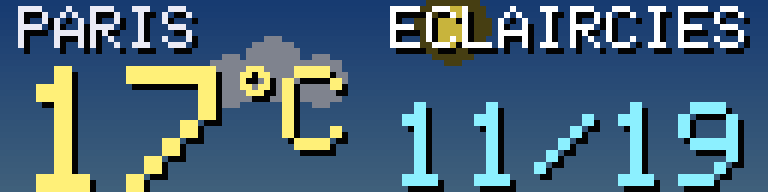
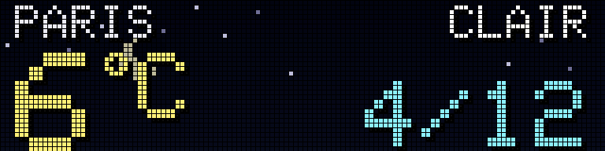
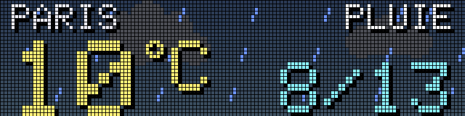
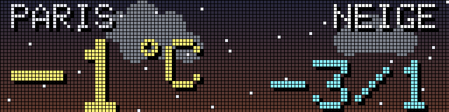
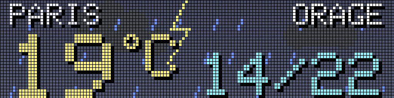
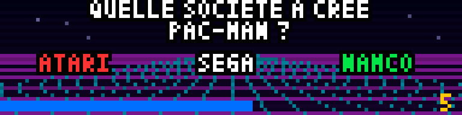
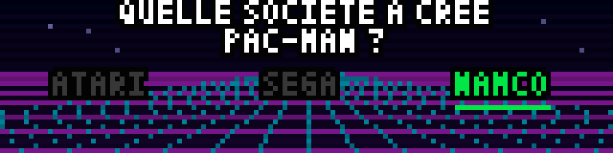
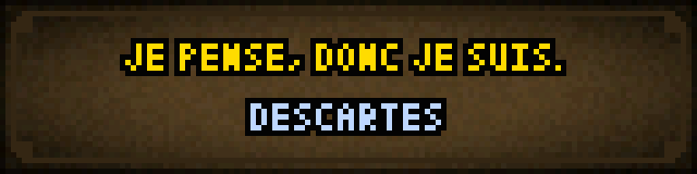
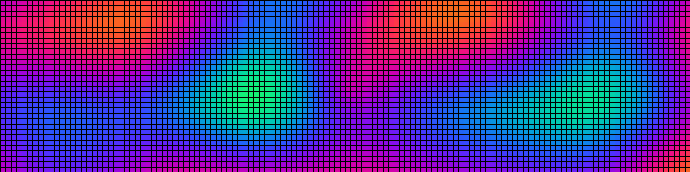
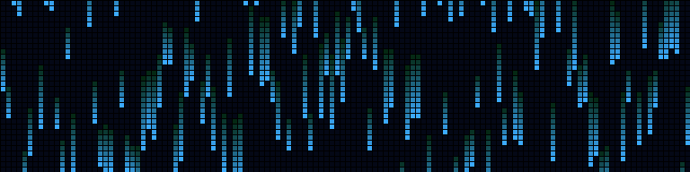
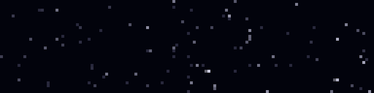
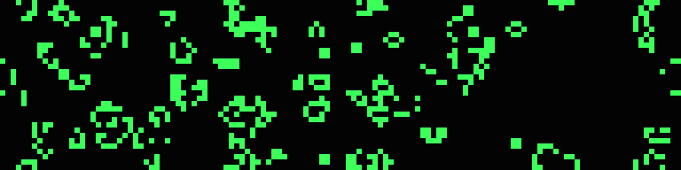
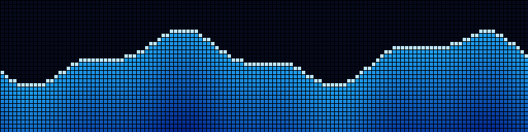
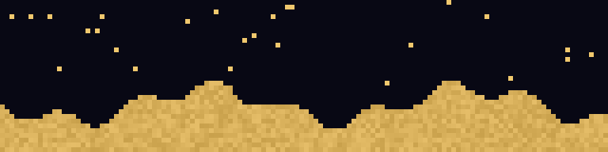
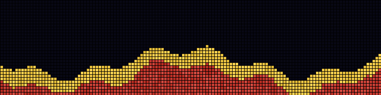
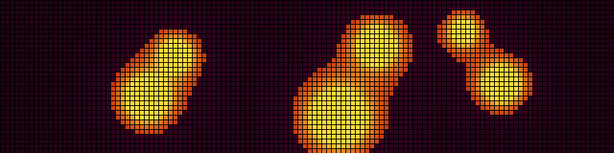
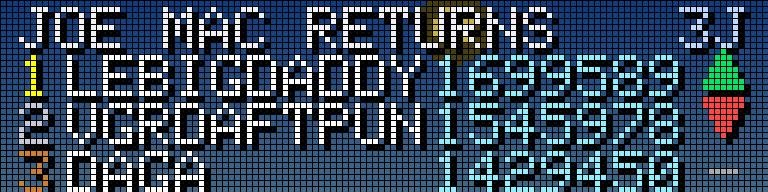
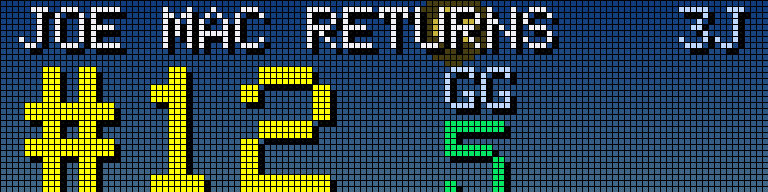
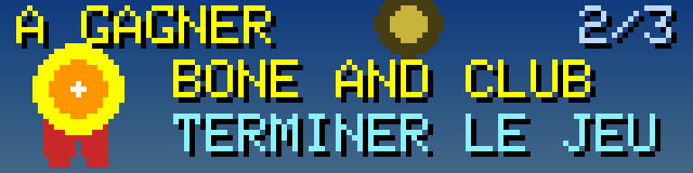
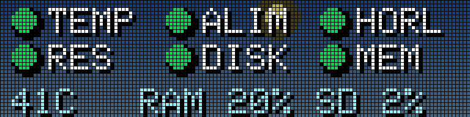
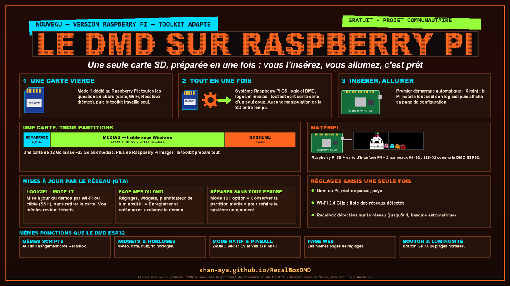
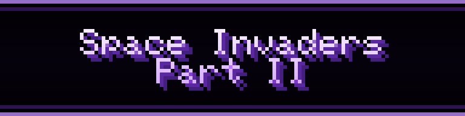
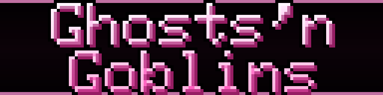
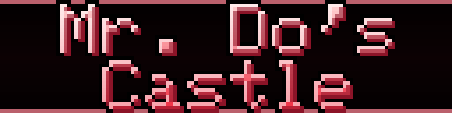
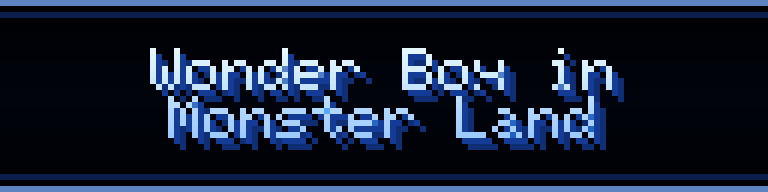
Il devient le marquee numérique de votre Recalbox
Aucune connexion n'est obligatoire pour la déco — mais connectez-le en WiFi à n'importe quelle Recalbox (PC, Raspberry Pi, Steam Deck, RGB Dual, RGB Dual 2, RGB Jamma...) et il affiche en direct le logo du jeu que vous lancez, son meilleur score, sa fiche, et le classement du défi communautaire du mois — automatiquement, sans rien reconfigurer.
Il adopte le thème de votre Recalbox
Changez de thème dans Recalbox : le DMD affiche les logos de vos consoles dans le style du thème actif — Midnight, CRT Color, Neoretro… 11 thèmes prêts à l'emploi, dont les thèmes officiels de Recalbox, textes FR/EN/ES quand le thème les propose, la langue et la région de votre Recalbox suivies en direct, une case dans la page web du panneau pour activer ou non le suivi, et la boîte à outils PC n'installe que les thèmes que vous choisissez. Et vos thèmes à vous ? Les thèmes créés par les utilisateurs sont eux aussi convertis, par notre moteur de conversion maison, directement depuis votre Recalbox : ils apparaissent sur le DMD comme les autres. (Rendu simulé à partir des vrais logos.)

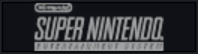
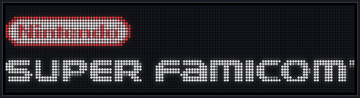
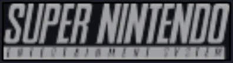
Prêt pour Recalbox 11 : le mode natif du firmware
Recalbox vous laisse choisir le firmware qui pilote le DMD, et RecalBoxDMD vous laisse aussi le choix : ses propres fonctionnalités, ou l'affichage par défaut de Recalbox. Recalbox 11 sait piloter lui-même un afficheur DMD, ZeDMD en USB ou en Wi-Fi compris. Le firmware du panneau sait s'y brancher : cochez « Mode Recalbox natif » dans la page web du panneau, et votre DMD se comporte comme un ZeDMD WiFi — c'est Recalbox qui décide de tout ce qui s'affiche.
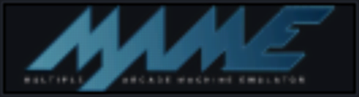
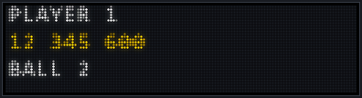
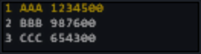
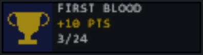
Ce que Recalbox 11 y affiche : le marquee du système et du jeu sélectionnés (logo, GIF animé ou PNG) ; l'écran des tables Visual Pinball, grâce au DMD externe pris en charge ; les meilleurs scores des jeux d'arcade MAME, FBNeo et Neo Geo, par pages de trois, avec la table d'origine du jeu vérifiée par RecalBoxDMD quand aucun score n'est sauvegardé ; et les succès RetroAchievements (badge, titre, points, progression, écran de maîtrise).
Une seule case, dans les deux sens. Le mode natif remplace les fonctions propres du firmware ; si vous préférez les garder — playlist de veille en GIF, horloge à thèmes, fiches infos des jeux, RB Challenge, commandes par scripts — décochez simplement la même case : tout revient comme vous l'aviez réglé.
Pour l'activer : 1. flashez le firmware avec le mode natif ; 2. dans Recalbox, renseignez l'adresse du DMD dans les réglages DMD (ZeDMD WiFi) — donnez une IP fixe à votre DMD pour qu'elle ne change pas ; 3. cochez « Mode Recalbox natif » dans la page web du DMD et redémarrez.
Hi-scores et RetroAchievements : fonctions de la Recalbox 11 alpha Patreon (11.0-patron-1.1). Écrans simulés d'après la mise en page de Recalbox 11.
Vos flippers virtuels s'affichent aussi sur le DMD
Lancez une table Visual Pinball depuis votre Recalbox : le DMD affiche en direct l'écran de la table, comme un vrai afficheur de flipper — puis reprend tout seul son marquee habituel à la fin de la partie. Sans redémarrage, activable d'un simple interrupteur dans la page web du panneau. Les tables colorisées (Serum) s'affichent en couleur, les autres gardent le rendu monochrome classique.
Plus besoin de brancher le DMD en USB pour le mettre à jour
Une nouvelle version du firmware est publiée ? Un avis s'affiche dans la page web de configuration du panneau — depuis votre téléphone comme depuis votre PC — avec un bouton « Mettre à jour maintenant (Wi-Fi) ». Le DMD télécharge lui-même le firmware sur GitHub (environ 2 minutes, écran éteint pendant ce temps), contrôle sa taille et son empreinte SHA-256, et revient tout seul à la version précédente si quoi que ce soit se passe mal. La boîte à outils PC (Mode 14) fait la même chose en un clic, et la page web comme la boîte à outils vous signalent quand une nouvelle version existe. Seul le passage à la version 2.44 demande un dernier branchement USB, une fois pour toutes.
Un cadre qu'on assemble soi-même, sans souder
Deux modules LED, une carte de connexion, un microcontrôleur — un tournevis suffit, environ 5 minutes de montage.
Tout voir en vidéo : présentation, montage, installation
Le tuto complet de Jamyz Gaming : présentation du projet, assemblage du cadre et installation pas à pas.